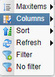

Filtering

Topic content
Orchestra provides a intelligent filter mechanism for tables. It is possible to set default filter settings for a table, which will be stored in the software's database. After a restart of the machine the declared filter configurations are still provided and valid. You can declare multiple so called filter set for one table.
One filter set contains one to n filter conditions. A filter condition is a concrete condition for one column of the table. It consists out of a column and a value, e.g. column name and value orc-* filters for all entries in the table, which's name starts with orc-.
Therefore by default in the tables context menu contains two filter entries: filter and no filter

Filter opens a new dialog for declaring filter sets.
No filter deletes all actual used filter conditions from the table.
Filter Dialog
To declare a filter set select filter in the context menu of the intended table. Following dialog will appear:
At first decide if you want to store a new filter set, update a existing one or if it is a filter just for the moment.
Following things must be done:
•If you want to store a new filter set, click on and choose entry >Create new filter setting. A new dialog will apppear which asks you to declare a name for your new filter setting. After that the filter setting is created. Now you can start to declare the filter conditions of the set.
•To update a existing filter set, click on Please select a filter set and select the intended filter set. The filter set will be loaded and you can start to change the actual declared filter conditions.
•For the usage of filtering without any storage functionality do nothing than declare your filter conditions. Leave the field for filter set selection alone.
Now you can declare your filter conditions by selection of the column(element Scenario id) to filter and adding a value(element -enter value-) for the column.
You can work with wildcards (*) within the filtering condition. The filtering of a status code from certain tables is done with defined expressions. Here is a list of the affected tables and their expressions:
•Scenario: true = aktive / false = inaktive
•Adapter: 0 = stopped, 1 = started, 2 = undefined
•Process monitoring: 2 = running, 3 = finished, 9 = error, 10 = warning
•Runtime: 0 = stopped, 1 = started
•System events: (Type): 0 = info, 1 = warning, 2 = error
•Timer: true = stopped, false = started
By clicking on the Icons:  and you can add or remove filter conditions.
and you can add or remove filter conditions.
By clicking on save your filter set will be executed on the table and, if you have chosen a name for the set, it will be stored on Orchestra server. If you want to delete a selected filter set, push the button in the declaration dialog. If you need some short explanation, there is also a dialog available to explain, how filter storage works.
The settings are individual per user and will also be available after a restart of Orchestra. Furthermore if you have chosen a filter set it will be executed on the table until you explicitly remove it by the context menu entry "No filter" or until you choose another setting. All saved filter settings can be seen in the tables context menu under the entry